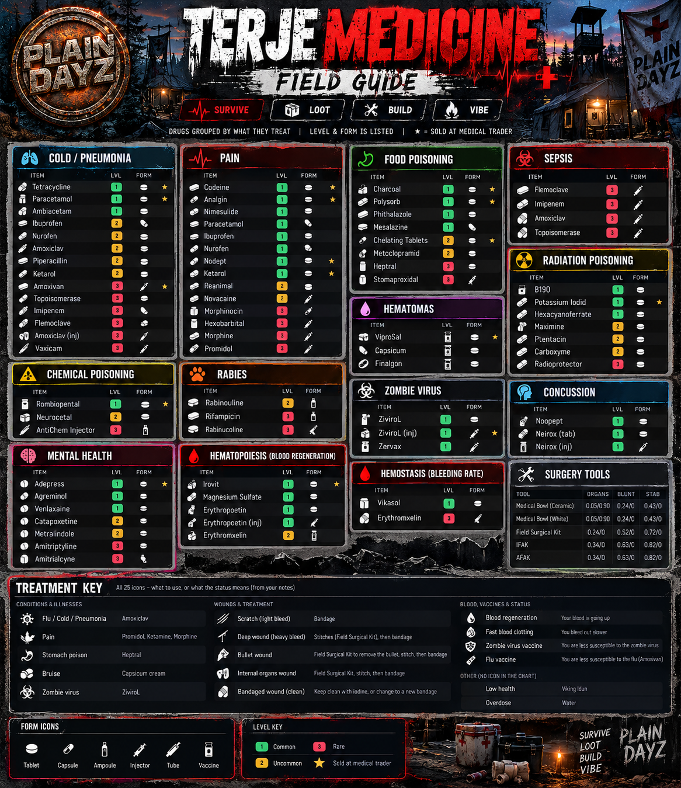

SURVIVOR FIELD GUIDE.
One place for tips, reference material and community-supplied instructions for Arsteinen, Banov, DeerIsle and Onforin. Exact mechanics may vary with server settings or mod updates.
TERJE MEDICINE.
Terje Medicine adds more involved diseases, injuries, medicines, treatments and medical items. The community-provided medicine field-guide graphic organizes treatment categories, item forms and levels. This is game information, not real-world medical advice.

Cold / Pneumonia
Respiratory-illness remedies, symptom relief and infection-focused items.
Pain
Pain management drugs appear in multiple levels and forms.
Food Poisoning
Digestive illness and contamination treatments.
Sepsis
Severe infection and medical treatment category.
Radiation Poisoning
Radiation-specific protection and treatment items, when applicable.
Hematomas
Bruise and swelling-related treatments.
Zombie Virus
Modded viral status and vaccine-related items.
Concussion
Head-injury-related treatments and symptoms.
Chemical Poisoning
Chemical exposure category and protective treatment items.
Rabies
Animal-bite disease treatment category.
Mental Health
Modded mental-health status and remedies.
Hematopoiesis
Blood-regeneration medicine group.
Hemostasis
Blood-clotting and bleeding-rate medicines.
Surgery Tools
Surgical kits vary in suitability for wound or organ treatment.
OFFICIAL TERJE MEDICINE WIKI ↗
FIND TERJE MEDICINE ON WORKSHOP ↗TERJE SKILLS.
PROGRESS OVER TIME
Terje Skills adds progression systems. Perform the relevant activities to develop skills; the exact skills and experience rates depend on how each server has configured the mod.
CHECK IN GAME
Use the server's installed skills interface to inspect your available skill categories and progression. Ask staff if skill gains or perks appear different from another server.
DNA WORKBENCH.
Community-supplied instructions for making and using the DNA workbench to remove, replace and program keycard chips.
01 · CRAFT THE KIT
- Combine 4 sticks and 1 metal wire to craft a workbench kit.
- Before placing it, obtain a soldering kit and a helping hands kit and put them in the kit's inventory.
- Place the hologram only once your full material collection is ready.
02 · BUILD THE BENCH
After placing the hologram, add:
- 1 metal wire
- 16 bolts
- 5 metal sheets
- 13 planks
- 1 laptop
- 1 card reader
Use a hammer to finish assembly. A hatchet can dismantle the finished bench or hologram.
03 · REMOVE AND INSTALL CHIPS
- Install a 40V battery in the bay at the top left of the workbench.
- With a used keycard in your hands, look at the helping hands and place the card there.
- Look at the soldering iron to remove the used chip.
- Open the top-left drawer and put solder and flux in its inventory along with the new chip.
- Use the soldering iron again to install the new chip.
04 · PROGRAM THE CARD
- Place the unprogrammed card into the card reader.
- Look at the laptop and select the programming option.
- Find chips in lootable blister packs: hold a pack in your hands and open it, then read its name or description for the chip color.
The supplied server instructions say supplies are found around the map rather than at traders. A built bench also has an in-game guide.
DRUG RUNNING MOD.
COMMUNITY REFERENCE
The server owner shared a Notion guide for their in-game drug-running mod. Refer to that guide for the mod's current mechanics, ingredients and progression. Server-specific economics and availability can differ.
OPEN DRUG RUNNING GUIDE ↗VAN WOODEN HOUSES.
| HOUSE | NAILS | PLANKS | LOGS | STONES | WIRE | SHEETS |
|---|---|---|---|---|---|---|
| A | 70 | 60 | 16 | 28 | 5 | — |
| B | 50 | 40 | 12 | 24 | 6 | — |
| C | 60 | 50 | 14 | 26 | 7 | — |
| D | 40 | 30 | 10 | 22 | 8 | — |
| E | 80 | 70 | 18 | 30 | 9 | — |
| F | 90 | 80 | 20 | 32 | 10 | — |
| G | 200 | 150 | 50 | 50 | 15 | 10 |
STARTER SURVIVAL TIPS.
STAY DRY AND WARM
Wet clothing and poor insulation can drain your temperature and stamina. Dry off, seek shelter, and use safe heat sources.
DRINK SAFELY
Prefer known safe water sources and purify questionable water. Avoid drinking untreated water that could make your character sick.
AVOID INFECTION
Keep bandages clean, pay attention to symptoms, and learn the modded treatment rules before relying on unfamiliar medicine.
PREPARE BEFORE BUILDING
Gather your full material list first and confirm server building restrictions, territory rules and despawn behavior with staff.